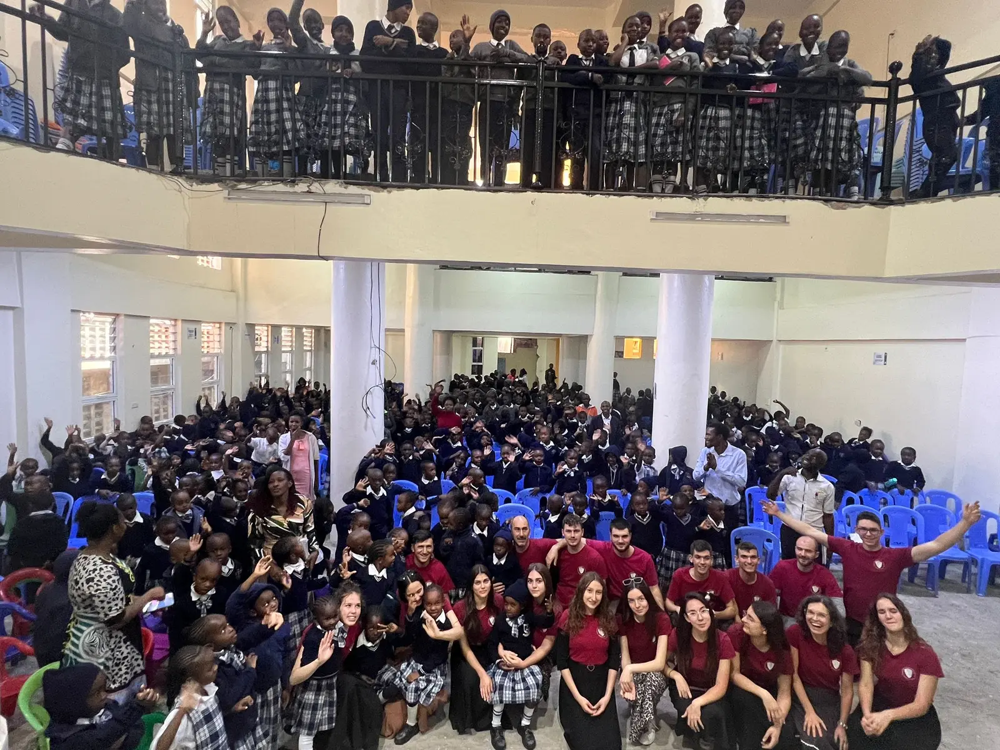

Kusekwa
Clasa a XII-a · Liceul Integritas
Acasă
Drumul
Galerie
Donează
Meniu
01
Acasă
02
Drumul
03
Galerie
04
Donează

Picha · pozele
Galerie
Wote · toți
01 / 11
Închide
‹
›
04 · Următorul
Donează


 04 · Următorul
Donează
04 · Următorul
Donează